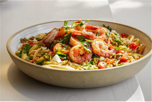

Shrimp Linguine

Description
A simple yet delicious dish that can be packed with protein and herbs, shrimp linguine is a must-make
for every home.
Ingredients
- vegetable oil: drizzle
- kosher salt: 1 tablespoon plus 1 1/2 teaspoons
- linguine: 3/4 pound
- unsalted butter: 3 tablespoons
- olive oil: 2 1/2 tablespoons
- garlic - minced: 1 1/2 tablespoons (4 cloves)
- large shrimp: 1 pound (16 shrimp)
- ground black pepper: 1/4 teaspoon
- fresh parsley leaves - chopped: 1/3 cup
- lemon - zest grated: 1/2
- lemon juice - freshly squeezed: 1/4 cup
- lemon - thinly sliced in half-rounds: 1/4
- hot red pepper flakes: 1/8 teaspoon
Instructions
- Drizzle some oil in a large pot of boiling salted
water, add 1 tablespoon of salt and the linguine,
and cook for 7 to 10 minutes, or according to the
directions on the package.
- Meanwhile, in another large (12-inch), heavy-bottomed
pan, melt the butter and olive oil over medium-low heat.
Add the garlic. Saute for 1 minute. Be careful, the garlic
burns easily! Add the shrimp, 1 1/2 teaspoons of salt, and
the pepper and saute until the shrimp have just turned pink,
about 5 minutes, stirring often. Remove from the heat,
add the parsley, lemon zest, lemon juice, lemon slices,
and red pepper flakes. Toss to combine.
- When the pasta is done, drain the cooked linguine and
then put it back in the pot. Immediately add the shrimp
and sauce, toss well, and serve.
Source
Food Network